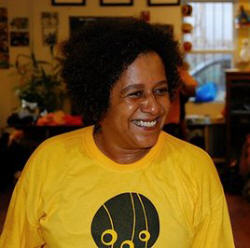

Местра Жанжа — интервью
Розанжела Коста Арауджо, известная под именем Местра Жанжа – одна из самых признанных персон в мире капоэйры. Получила образование историка в Федеральном Университете Баии и степень доктора наук по специальности «образование» в Университете Сан-Паулу. Посвятила более двадцати лет жизни капоэйре, как теории, так и ежедневной практике. В этом интервью, взятом для журнала Texts from Brazil, местра Жанжа раскрывает свою точку зрения на вовлеченность женщин в мир капоэйры, на изменения, произошедшие в этом мире за последние годы, на пути развития капоэйры в будущем и возможные трудности.
Многие специалисты говорят о капоэйре как об одном из самых исконных культурных явлений Бразилии. Какие именно черты капоэйры, по вашему мнению, определяют подобный статус?
Для начала я бы хотела напомнить, что капоэйра – это афро-бразильское культурное явление. Для меня это очень важно, потому что в глубине души я чувствую, что не стоит говорить о Бразилии, забывая о её африканской сущности. Держа это в уме, могу сказать, что капоэйра как искусство отражает образ жизни бразильцев, их творческий подход к ситуациям, где не избежать агрессии.
Именно так слово gingar (делать джингу) вошло в язык не только как название одного из движений капоэйры: оно означает способность справляться с несчастьями с помощью подражательных движений, похожих на смесь танца и боя, и превращать отрицательные стереотипы во всеобщую радость.
Вы посвятили более двадцати лет этому миру капоэйры. По вашим наблюдениям, в чём заключаются самые важные изменения, коснувшиеся капоэйры за это время?
Да, я занимаюсь капоэйрой на протяжении последних лет двадцати пяти, и, к счастью, у меня была возможность ознакомиться с особенностями её развития во многих штатах Бразилии, а также в других странах. Что больше всего меня поразило – это изменения в жизни групп и особенно местре. Это возможность работать вместе и организовать диалог между разными аудиториями, включая государственные организации – всё это, может быть, и не способно побороть традиционное недоверие, но показывает нам новые способы существования. Увеличение числа женщин-участниц групп – ещё один феномен, требующий внимания и обсуждения.
Женщины достигли определенной независимости и свободы в различных жизненных сферах, которой раньше у них не было, вплоть до середины двадцатого столетия. Какие стороны прогресса вам кажутся важными в связи с вопросом об участии женщин в играх капоэйра, выходе в роду?
Следует начать с того, что ещё до тех пор, как женщины стали выходить в роду, им пришлось преодолеть немало преград, чтобы стать капоэйристами и быть признанными в этом качестве.
То, что капоэйра – не только для мужчин (если признать, что так было раньше), уже не является новостью ни для кого. Сегодня существуют организации капоэйры, основанные и возглавляемые женщинами, и даже такие группы, особенно за океаном, где женщины составляют большинство. Однако неравенство можно заметить, если взглянуть, как мало женщин достигают в капоэйре высокого уровня в системе градации поясов. Мы видели группы, основанные на изобретенных ими же „традициях“, которые гласят, что женщина не может играть на атабаке или петь ладаинью, даже несмотря на то, что они занимаются этим каждый день на занятиях. Рода – то место, где группы показывают своё лицо, демонстрируют силу и компетентность. Вместо независимости женщины подвергаются угнетению и насилию, как настоящему, так и символическому. Это привело к образованию нескольких групп в разных странах, направленных на открытое обсуждение существующей проблемы, проявление солидарности и объединение образовательных ресурсов. И в этом смысле нам необходимо осознать, что капоэйра находится в непрерывном диалоге с обществом, как «малый круг» внутри «большого круга», и весь нелегкий путь, пройденный женщинами в обществе, был пройден и в мире капоэйры.
В чём заключаются препятствия, которые предстоит преодолеть женщинам в капоэйре?
Возможно, сейчас самое время перевернуть этот вопрос с ног на голову, и спросить, какие препятствия должна преодолеть капоэйра, чтобы должным образом принять женщин в свой круг. Таким образом, мы сможем обратить внимание на несколько проблем, имеющих отношение к этому вопросу, а именно: многообразие и право на равенство в обращении. Это задача, которую капоэйра должна решить, ведь присутствующие женщины часто отличаются как глубинным знанием специфических аспектов — движений, ритма, песен, истории и философии капоэйры — так и несомненными организаторскими и преподавательскими способностями, проявляющихся и в группах капоэйра, и в обществе в целом. Однако если мы хотим добиться успеха, необходимо понять, что капоэйра должна расширить взгляды на эстетическое многообразие. Как в группах, традиционно возглавляемых мужчинами, делается большой упор на эстетическую составляющую, чтобы у каждой группы и каждого местре был свой узнаваемый стиль, точно так же женщины хотят, чтобы им воздавали должное, хотят создать собственную базу, и необязательно подражательные – в плане движений – концепции, не отражающие их женскость.
Довольно часто приходится слышать, что образование ученика капоэйры должно быть цельным, то есть не ограничиваться техникой и физической подготовкой, а включать в себя также воспитание нравственности и этических принципов. Какие качества может воспитать капоэйра в знатоках этого искусства?
Люди, которые хотят стать учениками капоэйры, должны располагать начальной информацией. Это важно, поскольку капоэйра состоит из коллективов (я говорю о капоэйре Ангола), стиль группы складывается из исторических и философских аспектов. Другими словами, для начала хорошо, чтобы человек и группа оказались в одной системе координат.
С этого момента такие ценности как уважение к иерархии, наследию, многообразию, стремление к сотрудничеству помогают человеку стать членом выбранного им сообщества. Здесь я бы хотела иначе сформулировать точку зрения, что капоэйра способствует формированию характера. Быть капоэйристом – не просто обладать физическими навыками или музыкальным дарованием, но также вести себя в соответствии с учением и рекомендациями своей группы.
Капоэйра оказалась эффективным инструментом социального включения и единения. Какие именно черты капоэйры сделали это возможным? Что бы вы могли рассказать о важнейших шагах, предпринимаемых сегодня в этом направлении?
Да, капоэйра играет важную роль в объединении культурных сообществ, особенно в среде детей и молодежи, живущих в пригородах крупных городов. В добавление к различным уровням привлекательности и вовлечения, капоэйра сильно выиграла от преданности и инициативы людей, чьи усилия направлены на сохранение и развитие капоэйры.
Сегодня нам повезло, что правительство, начиная с инициативы на федеральном уровне, все больше признает социальную значимость капоэйры, разрабатывает программы информационной поддержки, в том числе и в печати, с тем, чтобы группы и ассоциации, далекие от основных культурных центров, могли заявить всему сообществу капоэйры о своей деятельности. Среди подобных инициатив можно отметить официальное признание капоэйры частью нашего духовного и культурного наследия, подтвержденное Институтом национального исторического и художественного наследия Бразилии (IPHAN) и проектом Living Culture (Живая культура). Целью подобных программ под эгидой Министерства культуры является дополнение политики, существующей в отдельных городах на муниципальном уровне. За границей, в добавление к предложенной министерством культуры Всемирной программе капоэйры, значительную работу выполняют местре и их группы, чтобы более тесно сотрудничать с образовательными учреждениями и связанными с ними культурными инициативами.
Какими качествами, с вашей точки зрения, должен обладать хороший капоэйрист?
Чувством ритма, а также способностью проявлять гибкость в вопросах „большого круга“. Открытость, постоянная готовность поддерживать форму. Проявлять ответственность в выборе учения, никогда не терять из виду гармоничное обучение искусству капоэйры. Безграничная толерантность и дружелюбие. Уважение к тем, кто отличается от вас.
Тема вашей докторской диссертации, в 2004 году, была связана с капоэйрой. Однако до недавнего времени многие капоэйристы с недоверием относились к научным исследованиям, полагая, что системы ценностей мир капоэйры и научного сообщества несопоставимы. Как складываются эти отношения на данный момент?
Полагаю, что эти предубеждения характерны отнюдь не только для капоэйристов. Заметьте, что приверженцы многих традиций, имеющих африканские корни, например, кандомбле, начинают признавать научный подход к подобным явлениям только в том случае, если они сами принадлежат к академическим кругам. Таким образом, сегодня мы видим, как во многих группах капоэйры в Бразилии и за рубежом, учёные и любители проводят продуктивные исследования капоэйры и публикуют их результаты. Имейте в виду также, что ещё одну часть профиля составляют группы, организованные исследователями капоэйры: Группа по исследованию капоэйры (GECA), работающая на государственном уровне, объединяет большинство капоэйристов, занимающихся научной деятельностью, и тех, кто преподает в университетах. Затем есть исследовательская группа Mestre Noronha, проект Института Жаир Мора в Сальвадоре.
Во вселенной капоэйра есть много отраслей и группировок. Считаете ли вы, что всё это многообразие является отражением сложности этого культурного явления и, следовательно, сложности бразильской культуры?
Бесспорно, и сегодня это может быть её основной ценностью. Чтобы составить представление о мириадах возможностей капоэйры и подходов к ней, нужно соотнести множество различных точек зрения.
Однако мы должны с осторожностью относиться к некоторым гибридам, из-за которых капоэйра теряет свой первоначальный облик. Вместо того чтобы заниматься созданием новых брендов и регистрацией торговых марок, лучше направить свои усилия на постижение тонкостей самого искусства, а также на использование безграничных возможностей совместной работы с другими областями знаний (сферами искусства, здоровья, образования, закона и т.д.)
Капоэйра быстро набирает популярность по всему миру. Что, как вы думаете, лежит в основе такого успеха? Как вы смотрите на глобализацию капоэйры?
Полагаю, капоэйра сохраняет в нас дух молодости. Это благодатная почва для индивидуальной и коллективной самореализации, она привлекает своей разносторонностью, музыкальностью и всем, что с этим связано. Свидетельством тому – дети, молодежь и взрослые, разделенные национальными, культурными и социальными различиями, полностью посвящают себя учениям капоэйры, стремятся стать частью международного сообщества капоэйристов — центр которого находится в Бразилии. Все вместе, они составляют фантастическую человеческую мозаику, способную объединить тех, кто иначе страдал бы из-за неравенства, связанного с подобными различиями в глобальном политическом контексте.
Более того, я считаю, что для новичков в капоэйре полезно задумываться об историческом и политическом значении капоэйры, чтобы она не оказалась завалена лишними слоями фольклора или не превратилась, в результате упрощенной интерпретации, в спортивные состязания. В конце концов, большинство капоэйристов против того, чтобы капоэйра стала олимпийским видом спорта. Другими словами, капоэйра должна держаться корней, чтобы сохранить свою сущность – это боевое искусство темнокожих людей в Бразилии, ставшее их средством борьбы за свободу.
С какими стереотипами все ещё приходится бороться капоэйристам?
Думаю, что есть стереотипы, от которых нужно избавляться обществу в целом, а не только властям. Бразильское общество должно признать свои Африканские корни и защищать их, как некую основу национальной идеи. Правительство, в свою очередь, должно определить меры, которые будут способствовать изменению общественного сознания, начиная с редактирования учебников и других трудов, введения поощрений, вплоть до контроля над тем, что работа в этом направлении выполняется надлежащим образом.
С какими трудностями сталкивается капоэйра сегодня?
Необходимо избавиться от националистических чувств, от нетерпимости, питающей расизм и ксенофобию. Мы должны уберечь капоэйру от заражения тем политическим насилием, которое мы стремимся побороть в «большом кругу». Капоэйра должна развиваться, сохраняя свободу и равенство, и, несмотря на международное распространение, устоять перед текущими тенденциями массовой культуры и законами рынка.